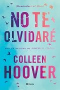

Paris despertaba tarde
El maestro de azúcar
Todos los lugares que matuvimos en secreto
Yó siempre sere yo, a pesar de ti
Twisted lies
Corrupt
Cuéntame esta noche
Lo que la nieve susurra al caer
Cuando volvamos a vernos
El color de las cosas invisibles
La piel infiel
Donde todo brilla
La mujer del viajero en el tiempo
Como agua para chocolate
De repente tú
El amor ha muerto
Madame Bovary
No te olvidare
Manual para damas afortunadas
Todas esas cosas que te dire mañana

Flores en la tormenta
Fragile heart
Forastera
Anna Karenina